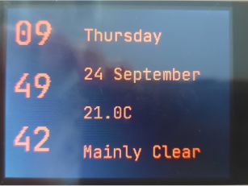
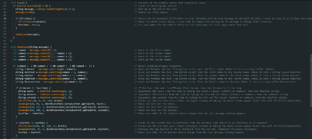
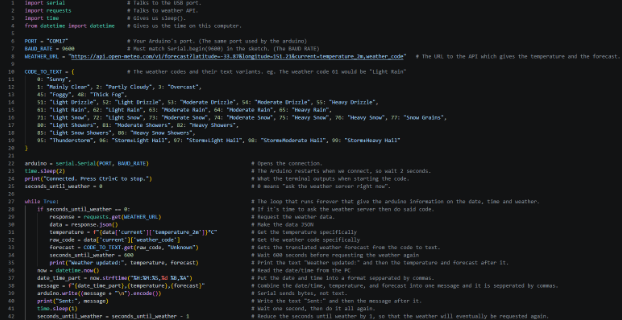
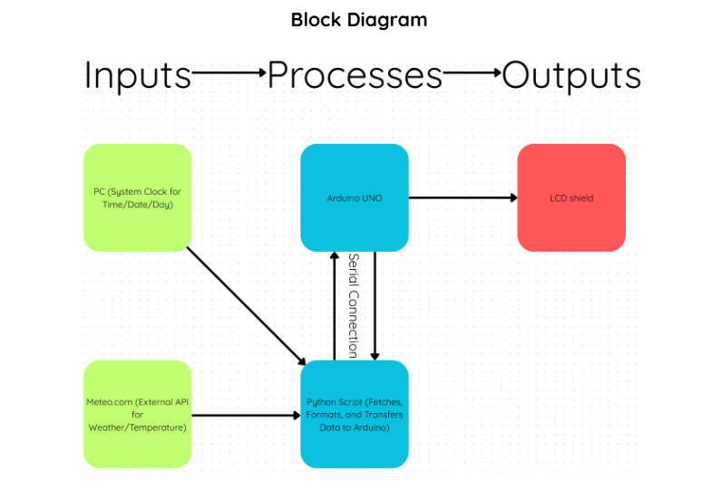

Welcome to My Arduino Project
This is my third project, I was tasked with creating a simple Arduino-based project that would demonstrate my understanding of how systems interact with each other through inputs, processes, and outputs.
My Reflection
Overall, I am happy with how my Arduino desk display has turned out, however I think that I could have improved with slightly more time and guidance.
Over the course of the term I have learned a lot about microcontrollers and hardware systems and the use of Arduinos in class has been a good way to test both coding skills and gain knowledge on how these software systems communicate with each other to eventually end up communicating with hardware.
I think that my final design was good but could be improved with further work. I had included a working clock that gave the time from my PC system clock down to the second, the date and day also from my PC, the weather and temperature from the external API “meteo.com”. The choice of adding the weather and temperature over other alternatives worked well because I was able to get a fully designed working product in the time limit along with the necessary clock. I also like my layout with one side dedicated to the time and the other for the forecast and the day/date.
Some challenges faced when designing and adding systems to my desk display were the fact that it was sometimes difficult to understand how certain things worked and how the python script output was read by the arduino script. However because of this I became more independent and with enough time and debugging I was able to figure out how to combine and manipulate the output of the python script to work with the arduino script and output the correct thing.
Through this task I learned how to code Arduinos and how data can be transferred through systems. At the start I was very confused on how to code for the Arduino with the LCD shield but through time I got much better and started learning new things that were not mentioned in class such as shapes which were useful to black out changing text instead of forcing the whole screen to update.
Ultimately, this task taught me a lot about how systems work and new coding languages such as python and C/C++ for the Arduino. I found it fun and interesting to learn about these systems and learn how to code in these languages myself.
My Arduino
This is a picture of my Arduino when it is powered on and connected to the Python script:

Arduino and Python Code
This is an image of my Code for my Arduino and Python script:


Block Diagram
This is an image of my block diagram:
